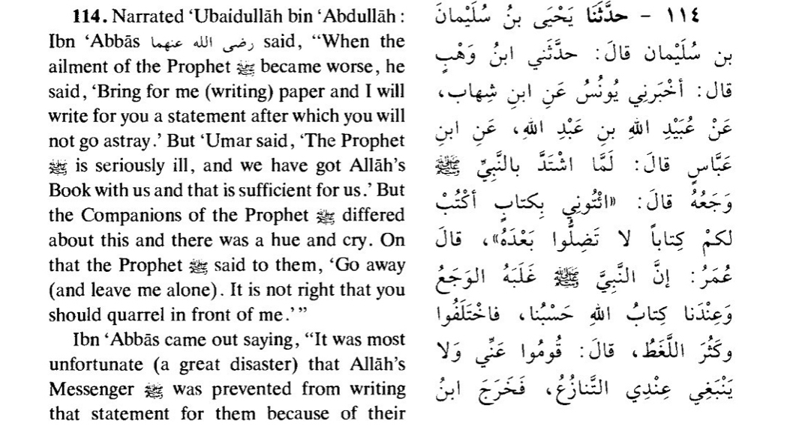

Abd Allāh ibn ‘Abbās mentions:
When the demise of the Prophet (peace and blessings be upon him) drew near, there were people in his house,
among whom was ‘Umar ibn al-Khattab (Allāh be pleased with him). The Prophet said, “Come, I will write a document for you,
after which you will not go astray. Thereupon Umar said, “Indeed, the Messenger of Allāh (peace and blessings be upon him)
is deeply afflicted with pain. You have the Qur’an with you; the Book of Allah is sufficient for us.”
Those who were present in the house differed: some of them said, “Bring (what the Prophet requested)
so that he may write a document for you, after
which you will never go astray,” whilst some supported the view of ‘Umar. When they caused a hue and cry in the presence of
the Prophet (peace and blessings be upon him), he said, “Go away.”
‘Ubayd Allah said, “Ibn Abbās (Allāh be pleased with him) used to say, ‘A great loss, indeed a great loss, that the
Prophet was unable to write a document for them due to their dispute and noise.
The Rāfidah Shī‘ah have employed this hadith as a pretext to disparage the Sahābah (Allāh be pleased with them all),
in particular our master ‘Umar ibn al-Khattāb (Allāh be pleased with him) from the following angles:
‘Umar and those who agreed with him disobeyed the instruction of the Messenger of Allāh (peace and blessings be upon him)
by refusing him an inkwell and paper when he requested.
They deprived the Ummah of their right, because the information which the Messenger of Allāh (peace and blessings be upon him)
was going to write contained what would preserve them from deviance. Not writing this information led to innumerable differences
between countless groups of Muslims, which was due to the person who prevented him.
The Messenger of Allāh (peace and blessings be upon him) intended to appoint ‘Alī as the khalīfah, due to which
‘Umar interfered and prevented him from doing so, as it would result in the family of the Prophet taking over the khilāfah.
‘Umar accused the Messenger of Allāh (peace and blessings be upon him) of insanity by saying, “Is the Messenger of
Allāh delirious?” even though he was free from insanity, delirium, and other such disorders.
Umar and those who agreed with him did not go against the instruction of the Prophet (peace and blessings be upon him)
out of stubbornness. Rather, they felt it inappropriate to exhaust the Prophet (peace and blessings be upon him) in such a critical state.
Ibn ‘Abbās explicitly mentions in the beginning of the hadith that the Prophet’s illness worsened on that day and that his companions
and family only gathered to visit and tend to him. When a person intends to do something during his illness, how often does his family
not prevent him for fear of his illness worsening? No one will regard this treatment
as disobedience; on the contrary, it is praise-worthy in such a situation, because it is a sign of their care
and attempt to prevent him from exhausting himself.
‘Umar only did what he did because he was laboring under the impression that the Prophet (peace and blessings be upon him)
will not pass away until he puts an end to the hypocrites and elevates the Word of Allāh above the Persians and Romans.
Thus, he assumed that if the Prophet (peace and blessings be upon him) refrained from writing in this critical state,
he could carry it out when his health improved. According to his assumption, even if the Prophet (peace and blessings be upon him)
never wrote anything, this Ummah would not be deprived. This is supported by the following narration of Ibn Sa‘d in his
al-Tabaqāt via the route of al-Wāqidī, from Ibn ‘Abbās:
During his final illness, the Prophet (peace and blessings be upon) said, “Bring an inkwell and paper that I may write for you a document,
after which you will never deviate.” Thereupon, ‘Umar remarked, “Who will deal with those cities of Rome? Surely, the Messenger of Allāh will
not pass away until we conquer them.”[5]
It is established in numerous reports that ‘Umar was not willing accept the death of the Prophet. Thus, he said, “The Messenger of Allāh will
never pass away until he puts an end to the hypocrites” as narrated by Ibn Sa‘d in his al-Tabaqāt.[6] On the following day, he said,
“I desired that the Prophet would outlive us.” Narrated by al-Bukhārī in (the chapter of) al-Ahkām.
This shows that it never crossed ‘Umar’s mind that the Prophet (peace and blessings be upon him) will pass away during that specific illness,
and that he believed that the Prophet (peace and blessings be upon him) will recover and live until he puts an end to the hypocrites and overcomes the
Persians and the Romans, until he is the last to pass away in his era. From another angle, he believed that the Prophet (peace and blessings be upon him)
would not abandon anything he was instructed to convey to the Ummah. If there was anything he intended to bequest, he could have done so after his health improved.
There was no need to hasten
in such a dire situation wherein it was feared that the Prophet (peace and blessings be upon him) could weary himself. Therefore, he stated,
as it is recorded in the narration under discussion, “Indeed, the Messenger of Allāh is afflicted with intense pain,
and the Qur’ān is in your possession; the Book of Allāh is sufficient for us.”
How often did our master ‘Umar not express opinions in the presence of the Prophet, to which he concurred? Likewise, this was an opinion he voiced.
Had he erred in his judgment, the Prophet would not approve. Since the Prophet never objected, it is evident that ‘Umar did not do it out of stubbornness.
Even if we hypothetically assume that his opinion was incorrect, it was based on judgment (ijtihād), in which he was not alone. All those present
in the house were also involved by not bringing the inkwell or paper, as ‘Umar never physically restrained anyone; he only held an opinion which he expressed.
Since no one carried out the instruction, it is clear that it was not mandatory according to all those present in the house; otherwise,
those who felt it was mandatory would have carried it out in spite of what the others felt.
While discussing the criticisms of the Rawāfid leveled against our master ‘Umar, Shaykh al-Islām Ibn Taymiyyah has presented an excellent answer:
Even if a particular issue was unclear to ‘Umar and afterwards it became clear, or he doubted some issues, it is not as severe as the one who
exercises ijtihād and passes a verdict wherein the Prophet (peace and blessings be upon him) passed a contrary verdict which he (the former) was unaware of.
This is because uncertainty regarding the truth is lighter than conviction upon error.
These are based on legitimate judgment. At most, it will regarded as an oversight which Allah has pardoned, just as ‘Alī (Allah be pleased with him)
ruled that the pregnant widow whose husband died should observe ‘iddah for the lengthier of the two periods. This was in spite of what has been recorded
in authentic narrations that when the Prophet (peace and blessings be upon him) was informed that Abū al-Sanābil ibn Ba‘kak passed a similar verdict for
Subay‘ah al-Aslamiyyah, he said, “Abū al-Sanābil has erred. Your ‘iddah is complete, so marry whoever you wish.”
The Prophet (peace and blessings be upon him) declared that the person who passed this ruling erred. Abū al-Sanābil was not qualified to exercise
ijtihād nor was he suited to pass a ruling in the presence of the Prophet. As for ‘Alī and Ibn ’Abbās, even though they passed a similar verdict,
it was based on ijtihād and was after the demise of the Prophet, and the incident of Subay‘ah did not reach them. Similar is the case of all those
Companions who are qualified to exercise ijtihād: when they exercise ijtihād, pass a verdict, and give a ruling wherein the Sunnah is contrary
to that and the Sunnah has not reached them, they will be
correct in their ijtihād.[7]
The Messenger of Allāh (peace and blessings be upon him) never rebuked or punished anyone who prevented him from writing, save his statement,
“Go away” even though during his final illness he rebuked his family for treating him with al-ladūd (medical drops) under the assumption that he suffered
from pleurisy (dhāt al-janb). When he was informed what had occurred, he did not suffice on rebuking them, but he also instructed everyone except
‘Abbās to take al-ladūd. If not writing at that time was wrong, the Prophet would have rebuked them
———
second allegation
What the Messenger of Allāh (Peace and blessings be upon him) was going to write could only be one of the following:
Something that was necessary for him to convey, the ignorance of which will be a definite cause of deviance.
Something that emphasizes a matter he already conveyed, which he intended to write so that the effect may remain longer.
If it was from the first category, then it is not possible for the Messenger of Allāh (peace and blessings be upon him) to abandon the propagation
of something he was instructed to convey due to opposition. It is known that he would covey what he was ordered to convey even if it cost him his
life, wealth, and hometown. How could he abandon the explanation of a matter the absence of which will lead to the deviance of the Ummah,
merely because some of his companions prevented him from doing so?
Towards the end of his book, Dalā’il al-Nubuwwah, al-Bayhaqī writes:
If he intended to write what the Ummah was in need of, he would not have abandoned it due to their differences or due any other reason for that matter,
because of the verse of the Qur’ān, “Convey what has been revealed to you.” Just as he never abandoned the propagation of other matters due to the
opposition or animosity of his enemies.[8]
Furthermore, the Prophet lived for approximately four days after this incident. The incident occurred on a Thursday, and he passed away on a Tuesday.
Therefore, if what he wanted to bequest was necessary, he would have done so in these days when it is proven that he issued several injunctions
in these days. It is proven through numerous narrations that during this period his health improved. Therefore, if the bequest was concerning a
matter that the Ummah was in need of, he would not have abandoned it.
If it was from the second category, the bequest would not have been any new information that he was to convey to the Ummah; it would only be an explanation
of what he already conveyed. Therefore, there is no reason to criticize those who were against the idea of writing in view of the severity of his illness,
because in reality they have not deprived this Ummah.
It is evident from the above, that what the Prophet (peace and blessings be upon him) intended was either a mere emphasis of what he already explained
and thus he abandoned it sufficing on the previous explanation, or it was an issue not necessary for him to convey but he intended to do so out of compassion
for the Ummah. Thereafter, it became evident to him by judgment or revelation from Allāh that it is preferable to abandon it.
————-
Answering the 3rd allegation
The third allegation is merely a claim that cannot be substantiated. From where have they received knowledge that the Messenger of
Allāh (peace and blessings be upon him) intended to write concerning the khilāfah of ‘Alī? If this is what he intended, no human nor jinn could have prevented him.
How could he refrain from expressing the truth merely because of our master ‘Umar’s opposition? Did he fear ‘Umar?We seek Allāh’s protection. He never feared
‘Umar ibn al-Khattāb, whereas no one was stronger and braver than him during his period of disbelief. Therefore, how could he fear him after accepting Islām?
Do these critics not realize that their criticism is not only directed to ‘Umar; rather, it is an objection to the propagation,
message, bravery, and zeal of the Prophet (peace and blessings be upon him). It is in this manner that enmity blinds the sight of men, and fanaticism impairs ones understanding.
If the intent of the writing was to appoint a khalīfah, it would definitely be Abū Bakr al-Siddīq (Allah be pleased with him),
because he was appointed by the Prophet for hajj, to lead the prayers during his final illness, which was a clear indication of appointment
for the greater leadership (i.e. khilāfah).
It was for this reason that ‘Alī said, “When the Prophet passed away, I pondered and thus it was apparent to me that Salāh is the hallmark of Islām and foundation of dīn.
Therefore, We were pleased to hand (the affairs of) our world to the person whom the Prophet was pleased with (the affairs) our religion,
so we pledged allegiance to Abū Bakr.”[9]
In Gharīb al-Hadīth, Ibn Qutaybah narrated via the route of al-Rabī‘ ibn Nāfi‘ al-Halabī, from Ibrāhīm ibn Yahyā al-Madīnī,
from Sālih Mawlā al-Taw’amah that ‘Alī (Allah be pleased with him) said, “By Allāh, Abū Bakr accepted Islām while I was still young; I can speak but it will not be heard,
so how can I be more suitable for Abū Bakr’s position?”[10]
It is reported on the authority of Sa‘īd ibn al-Musayyib that he said, “’Alī ibn Abī Tālib came and pledged allegiance to Abū Bakr.
He then heard the statement of the Ansār, so he said, “Which one of you will put back the person who the Prophet put forward?” ‘Alī al-Muttaqī
mentioned this in Kanz al-‘Ummāl in the chapter
of khilāfah, and gave reference to al-‘Ushārī, al-Lālakā’ī, al-Asbahānī in al-Hujjah. He also mentioned other narrations of this nature.[11]
It is proven from the Prophet (peace and blessings be upon) that he told ‘Āishah (Allāh be pleased with her),
“I intended to send a message to Abū Bakr and his son that I assign (i.e. the former) lest some people make claims or some people aspire.
Thereafter, I said, “Allah will not allow otherwise and the believers will prevent it from being otherwise, or (she said) the believers will
not allow otherwise and Allāh will prevent it from being otherwise.” Narrated by al-Bukhārī in the chapter of al-Mardā and al-Ahkām.[12]
Why is it not possible that the Prophet (peace and blessings be upon) intended to write about the khilāfah of our master
‘Abū Bakr, after which it became apparent that leaving it as a matter of consultation between the Muslims would be better, as he knew that
the believers would not allow other than Abū Bakr?
It is also established in some books of the Shī‘ah that our master ‘Alī ibn Abī Tālib acknowledged that the Messenger of
Allāh (peace and blessings be upon) never assigned him anything, and only took a promise from him to pledge allegiance to Abū Bakr.
It is mentioned in Nahj al-Balāgah that he said:
We are pleased with Allāh’s decree, and we have submitted His affair to Him. Do you think I will lie against the Prophet?
By Allāh, I was the first to believe in him, so I will not be the first to lie against him. Thus, I pondered over my affair, and it became apparent that
my obedience superseded my allegiance, and the promise around my neck is for someone else.” [13]
It is clear that he was referring to his allegiance to Abū Bakr, and that he pledged allegiance to Abū Bakr and fulfilled
a promise with which the Prophet apparently entrusted him. Allāh Most High knows best.
——————-
As for the fourth allegation i.e. ‘Umar ibn al-Khattāb accused the Messenger of Allāh of insanity by saying, “Is the Messenger
of Allāh delirious?” I have not come across a single authentic narration that supports the claim that the one who uttered these words was our master
‘Umar ibn al-Khattāb.
Ibn ‘Abbās only stated that the Companions differed; some said, “Is the Messenger of Allāh delirious?” without any specific reference to
‘Umar as the one who uttered these words. Accordingly, these words will have one of the following interpretations:
Among the interpretations is that it was the statement of ‘Umar or the statement of someone who agreed with him,
inquiring whether his instruction was deliberate or it was due to the severity of illness just as sick people often utter speech that is not taken serious.
They only inquired because illness does not prevent the Prophet (peace and blessings be upon him). During that time, he was severely ill.
It is not possible for us to conceive the extent of agitation the Companions were going through at the time. The most important matter in the sight of the Companions was the
Prophet’s recovery and that nothing worsens his illness.
From another angle, they were certain that he (peace and blessings be upon) was not deficient
in conveying the message and passing the trust.
From a third angle, they knew that the Prophet disliked writing anything besides the Qur’ān except in dire
need so that nothing gets confused for the Qur’ān. In such a situation, one of them assumed that his instruction during such a severe
illness was not definite and thus they inquired whether his instruction was a definite matter or a dismissive statement. It was not regarded
as the slightest amount of ill conduct; rather, it was only a natural agitation the Companions were suffering from in that extreme situation.
Among the interpretations is that the word “hajara” in this statement is in the meaning of “departing” and not
in the meaning of “delirium.” Linguists have expressly mentioned that the verb, “hajara yahjuru” is also used for “abandonment” and
“departing.”[14] Accordingly, the meaning would be: they inquired, “Will the Messenger of Allāh depart from us, because of which he is instructing us to write his bequest?
This is supported by the answer we provided for the second allegation, i.e. ‘Umar was laboring under the impression that the Prophet (peace and blessings be upon him) will not pass away
until he puts an end to the hypocrites and elevates Islām above the Persians and the Romans. Therefore, if ‘Umar or any other Companion
wanted to ask him, “Has the time come for him to depart?” there would be no objection against any of them, because this statement was uttered out of extreme
love for the Messenger of Allāh (peace and blessings be upon him) and displeasure of separating from him.
Thus, all of their objections have been answered. All praise is for Allāh.
[1] Ibn ‘Abd al-Barr, al-Istī‘āb, vol.1, p.2
[2] Sūrat al-Tawbah, verse 100
[3] ‘Uthmani, Takmilat Fath al-Mulhim, vol.2, pp.85-89
[4] Ahmad, Musnad Ahmad, vol.1, p.90. Its chain contains the narrator, Nu‘aym ibn Yazīd regarding whom there is no biographical information,
as is mentioned in al-Tahdhīb. However, al-Hāfiż (Ibn Hajar) mentions a portion of this narration in Fath al-Bārī (vol.1, p.186) without criticizing it,
which shows that it is acceptable according to him. In any case, the Shī‘ah deduce from narrations the chains of which contain narrators who are less known than him.
[5] Ibn Sa‘d, al-Tabaqāt al-Kubrā, vol.2, p.244
[6] Ibid. vol.2, p.264
[7] Ibn Taymiyyah, Minhāj al-Sunnah, vol.3, p.136
[8] Al-Nawawī, al-Minhāj Sharh Sahīh Muslim, pp.89-92.
[9] Ibn ‘Abd al-Barr, al-Istī‘āb,vol.2, p.242
[10] Ibn Qutaybah, Gharīb al-Hadīth, vol.2, p.124
[11] Al-Muttaqī, Kanz al-‘Ummāl, vol.3, p.141
[12] Al-Bukhārī #5666, #7217
[13] Nahj al-Balāghah, vol.1, p.89.
[14] Al-Zabīdī, Tāj al-‘Arūs, vol.3, p.611
Brief Answer
If not bringing an inkwell and paper in such a situation will be regarded as a sin (we seek Allāh’s protection), then ‘Umar was not alone in this. Rather,
all those present in the house at that time were also involved; hence, all would be equally guilty.
In particular, our master ’Alī would also be guilty because he did exactly what ‘Umar did. Imām Ahmad narrates on the authority of ‘Alī ibn Abī Tālib:
The Prophet (peace and blessings be upon him) instructed me to bring him paper, so that he may write that by which his Ummah will not deviate after him.” He
said, “I feared that he will pass away, so I told him, “I will (rather) memorize and retain it.” The Prophet (peace and blessings be upon him) said,
“I advice you regarding Salāh, Zakāh, and that which your right hands possess.”[4]
Undoubtedly, this narration uproots all the objections of the Shī‘ah, as it is explicit in that there was no difference in that situation between the approach
of ‘Umar and ‘Ali (Allāh be pleased with them). If the above-mentioned incident is the same as the one under discussion, then they both prevented the
Prophet (peace and blessings be upon him) from writing in consideration of his condition. It was for this reason ‘Umar said, “Indeed, the Messenger of
Allāh (peace and blessings be upon him) is deeply afflicted with pain” and ‘Alī said, “I feared that he would pass away.” If the above-mentioned incident
is other than that being discussed, the
same objections posed by the Shī‘ah against ‘Umar will be directed to ‘Alī in the narration recorded in the Musnad of Ahmad. Whatever answer they will
provide on behalf of ‘Alī will be equally applicable in defense of ‘Umar.
Furthermore, this narration shows that the bequest of the Messenger of Allāh (peace and blessings be upon him) at that time had no connection with the issue of
khilāfah; rather, it was to emphasize the importance of Salāh, Zakāh, and the rights of slaves etc.
Saheeh Bukhari 114, Saheeh Muslim 1637b/1637a, Saheeh Bukhari 4251
(was the prophet able to write?)
The above ahadeeth are used to make claims on the supposed literacy of the prophet.
The claim is that the prophet, who Muslims posit was illiterate throughout his life, was actually able to write perhaps later on, since he apparently said
‘bring for me paper and I will write it for you’ and “messenger was prevented from writing that statement for them”.
Or
‘So that I write for you a document’
Or
“Took the writing sheet.. and he wrote (or got it written)”
This of course has huge implications on the deen: if the prophet was indeed able to write, then he may have written the quran himself, or so the claim goes.
Claim: “The Prophet (saw) wanted to write before his death”
When the Prophet (saw) was ill before his death, he told / asked those around his deathbed to bring him a sheet to write some instructions for them. It was narrated he said:
ائْتُونِي بِالْكَتِفِ وَالدَّوَاةِ - أَوِ اللَّوْحِ وَالدَّوَاةِ - أَكْتُبْ لَكُمْ كِتَابًا لَنْ تَضِلُّوا بَعْدَهُ أَبَدًا
"Bring me a shoulder blade and ink-pot (or tablet and inkpot), so that I write for you a document (by following which) you would never go astray." (Sahih Muslim 1637 b)
The argument here is then the prophet was asking for writing materials to write something for them, so he must have been literate to do this.
It is not uncommon to say something like, "the president wrote to so and so" meaning he ordered someone to do so. For example, the prophet wrote messages
to kings and the narrations use the very same term (كتب) but the Prophet certainly appointed writers for this job who wrote them on his behalf. (Tafseer al-Qurtubi, Vol. 13, p. 352)
This is supported by Ibn Hajar al-Asqalani's observation that in the normal course of events, the Prophet (saw) appointed writers to write the revelation,
messages to kings and contracts. It would be unusual to say he wanted to write himself in his last death throes. (Ibn Hajar, Fath al-Bari, Vol. 7, pp. 504-505)
There is no narration saying he actually wrote anything whilst there are many narrations where he would ask others to write for him - this leaves this
interpretation as highly doubtful.
Furthermore, the Prophet (saw) was extremely ill as Aisha (ra) said:
دَخَلَ عَلَىَّ رَسُولُ اللَّهِ ـ صلى الله عليه وسلم ـ وَهُوَ بَيْنَ رَجُلَيْنِ وَرِجْلاَهُ تَخُطَّانِ بِالأَرْضِ
"The Messenger of Allah (saw) entered upon me, (supported) between two men, with his feet making lines along the ground." (Ibn Majah Hadith 1686)
In such a state, even if he could write, he would not have been able to write. This would suggest what he meant was 'he would ask someone to write.'
Claim: “The Prophet (saw) wrote part of the Hudaybiyyah Treaty”
It was narrated regarding the Hudaybiyyah treaty:
فَلَمَّا كَتَبُوا الْكِتَابَ كَتَبُوا، هَذَا مَا قَاضَى عَلَيْهِ مُحَمَّدٌ رَسُولُ اللَّهِ. قَالُوا لاَ نُقِرُّ بِهَذَا، لَوْ نَعْلَمُ أَنَّكَ رَسُولُ اللَّهِ مَا
مَنَعْنَاكَ شَيْئًا، وَلَكِنْ أَنْتَ مُحَمَّدُ بْنُ عَبْدِ اللَّهِ. فَقَالَ " أَنَا رَسُولُ اللَّهِ، وَأَنَا مُحَمَّدُ بْنُ عَبْدِ اللَّهِ ". ثُمَّ قَالَ لِعَلِيٍّ "
امْحُ رَسُولَ اللَّهِ ". قَالَ عَلِيٌّ لاَ وَاللَّهِ لاَ أَمْحُوك أبدا. فأخذ رسول الله صلى الله عليه وسلم الكتاب، وليس
يحسن يكتب، فكتب هذا ما قاضى محمد بن عبد الله
"When the agreement was being written, the Muslims wrote: "This is the peace treaty, which Muhammad, Apostle of Allah, has concluded."
The infidels said to him, "We do not agree with you on this, for if we knew that you are Apostle of Allah, we would not have prevented you from anything
(i.e. entering Mecca, etc.), but you are Muhammad, the son of Abdullah."
Then he said to Ali, "Erase Apostle of Allah'."
Ali said, "No, by Allah, I will never erase you (i.e. your name)."
Then Allah's Messenger (saw) took the writing sheet, and he did not know a better writing, and he wrote the following:
'This is the peace treaty which Muhammad, the son of Abdullah…'" (Sahih al-Bukhari 4251)
The argument here is this demonstrates the Prophet (saw) could write.
This however does not give the full picture as it ignores other evidences that elaborate this event in further detail.
Just like all the other nuances of the Arabic language, Scholars establish that the term (كتب) appearing in this hadith
has to be understood in light of other narrations, as narrations explain one another, and context matters with regards to the definitions of Arabic words.
They say he ordered Ali to write and others state he did not know the place of the written line. It is narrated in al-Bukhari:
فَقَالَ لِعَلِيٍّ " امْحُ رَسُولَ اللَّهِ ". فَقَالَ عَلِيٌّ وَاللَّهِ لاَ أَمْحَاهُ أَبَدًا. قَالَ " فَأَرِنِيهِ ". قَالَ فَأَرَاهُ إِيَّاهُ، فَمَحَاهُ النَّبِيُّ صلى الله عليه وسلم بِيَدِهِ
"He (the Prophet) asked Ali to erase the expression of Apostle of Allah. On that Ali said, 'By Allah, I will never erase it.
' Allah's Apostle said (to Ali), 'Let me see the phrase. When Ali showed him the phrase, the Prophet (saw) erased the expression with his own hand." (Sahih al-Bukhari 3184)
In the narration of Muslim, it says:
فَأَمَرَ عَلِيًّا أَنْ يَمْحَاهَا فَقَالَ عَلِيٌّ لاَ وَاللَّهِ لاَ أَمْحَاهَا . فَقَالَ رَسُولُ اللَّهِ صلى الله عليه وسلم " أَرِنِي مَكَانَهَا " . فَأَرَاهُ مَكَانَهَا فَمَحَاهَا وَكَتَبَ " ابْنُ عَبْدِ اللَّهِ " .
"He (the Prophet) told Ali to strike out the words. Ali said: No, by Allah, I will not strike them out. The Messenger of Allah
(may Peace be upon him) said: Show me their place (on the parchment). So Ali showed him their place and the Prophet struck them out; and Ali wrote: Ibn Abdullah." (Sahih Muslim 1783 c)
In the previous two narrations, the prophet could not recognize the written line and asked Ali to show him the words.
In light of this narration, scholars establish the sentence in the first hadith, "Then Allah's Messenger (saw) took the writing sheet"
refers to the sentence in the other two clarifying narrations: "he (the Prophet) struck them out," then Ali "he wrote" the rest. (al-Qurtubi, Ibn Hajar and Ibn Kathir)
Conclusion
Both narrations, when reviewed in detail and contextualised, do not suggest the literacy of the Prophet. In fact they show the converse - the prophet's illiteracy.
1637c_Saheeh_Bukhari_4251_was_the_Prophet_able_to_write_and_read.pdf